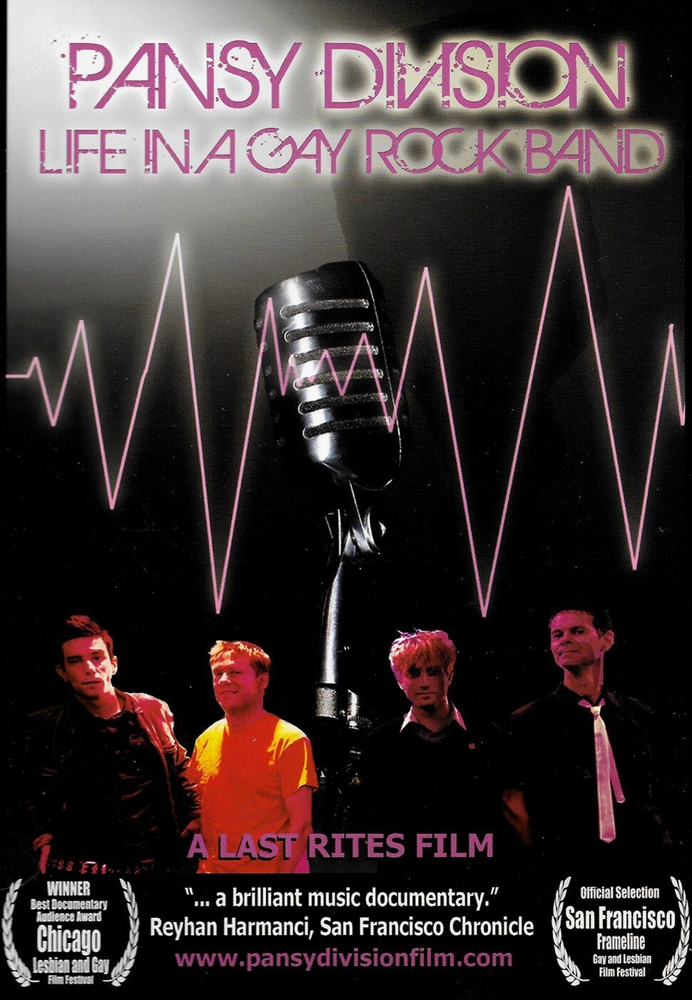
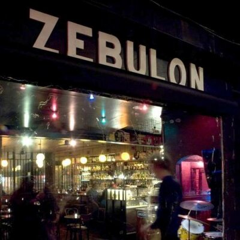
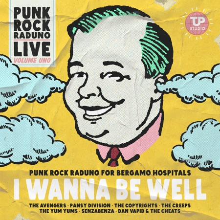
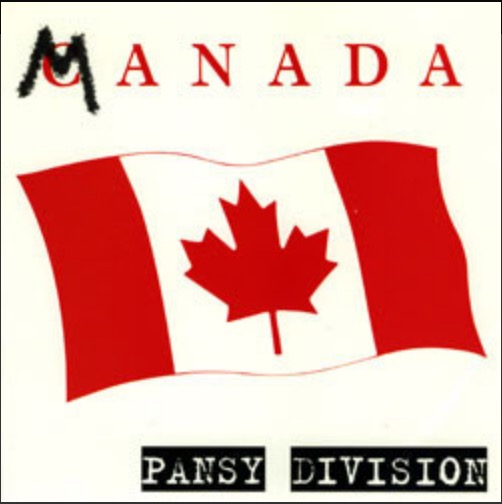
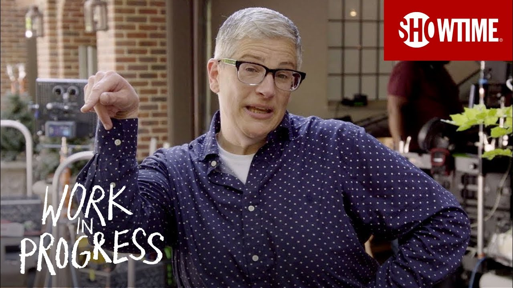

NEWS
Watch the Pansy Division documentary (for free!)
- September 20, 2020
- In 2007, the documentary film PANSY DIVISION: LIFE IN A GAY ROCK BAND was released. Covering the history of the band in a concise 84 minutes, it played film festivals all over the world, and was issued on DVD in 2008 with a bonus DVD of live footage.
- Watch it for free on YouTube!
- Also, you can order a copy of the DVD from our merchandise page.
- 
Chris & Jon on the Turned Out a Punk podcast
- July 8, 2020
- Chris and Jon were each interviewed separately for the podcast Turned Out a Punk, hosted by Damian Abraham of the Canadian band Fucked Up. Each of us enjoyed our interviews, so if you want some really detailed info on how we began and our pre-PD experiences with music, here you go!
Pansy Division Tribute Album
- June 25, 2020
- Earlier this year some fans put together a PD tribute album, Pansy Revision – A Tribute to Pansy Division. It’s available to stream or purchase on Bandcamp, with all proceeds going to the Trevor Project.
- Check out the article!
Update on Shows
- June 21, 2020
- It will come as no surprise that we are not expecting to play any live shows the rest of this year. Despite having scheduled a number of shows throughout the year, the outlook is grim for live music. Some shows have not been formally cancelled, but it’s highly unlikely they will occur, and we have removed them from our Upcoming Shows list.
- The show we most looked forward to was our appearance at the Burger Boogaloo, where we to open for Bikini Kill. It was supposed to happen in July, then was rescheduled for Halloween weekend, and has now been pushed back to July 2021. They have also renamed it BB 11, to reflect the word “boogaloo” being hijacked by white supremacist extremists.
- We’re glad we made it to our Texas shows right before the pandemic hit, and look forward to whenever it is we can safely perform live again.
Our LA show has been rescheduled
- April 11, 2020
- Our show in Los Angeles at Zebulon has been rescheduled. We’re now set to play Friday, October 30, with Trap Girl as opener. It’s our only show in Southern California this year. Tickets are $15 in advance, $18 at the door, available here. It’s a 21+ show.
- 
- Zebulon is at 2478 Fletcher Drive, Los Angeles, CA 90039, info@zebulon.la.
I Wanna Be Well live compilation (Punk Rock Raduno benefit for Bergamo Hospitals)
- April 6, 2020
- We have 2 songs on I Wanna Be Well, a digital compilation of 17 live tracks taken from last year’s Punk Rock Raduno Festival in Bergamo, Italy, also including The Avengers and other great bands.
- Bergamo has been hit very hard during the Coronavirus crisis, and the folks who put on the festival have created this comp to raise money for hospitals in Bergamo. You can hear us doing live versions of “He Whipped My Ass in Tennis (Then I Fucked His Ass in Bed)” and our cover of Green Day’s “Coming Clean.”
- To download/stream the compilation and donate a little something, click this donation link
- 
Pansy Division and Hockey
- March 8, 2020
- Back in 1997 we released our “Manada” single on Vancouver B.C. label Mint Records, with the B-side “Hockey Hair.” Both songs appeared on our album More Lovin’ From Our Oven later that year, and “Hockey Hair” was included on the Canadian compilation Johnny Hanson Presents Puck Rock Vol. 2 in 1999.
- Here’s a brief interview about PD & Hockey done this week on the blog The Witzard:
- 
PD song in new TV series Work In Progress
- March 8, 2020
- Streaming on Showtime Now is a new queer series called Work In Progress, starring Abby McEnamy. They used our song “Luv Luv Luv” in Episode 3.
- 
- The show features “a 45-year-old self-identified fat, queer dyke whose misfortune and despair unexpectedly lead her to a vibrantly transformative relationship. Chicago improv mainstay Abby McEnany co-created and stars in this uniquely human comedy series.”
- Our involvement happened very suddenly and we still haven’t seen yet the show. But several people have mentioned to us that they heard and the song and like the show, so we will.
Singles & Such
- November 30, 2020
- You may have noticed, on Spotify and Apple Music and other music streaming sites, that there is a new Pansy Division release. Singles & Such collects original songs that had been released on Pileup, More Lovin’ From From Our Oven, as well as other songs from singles and compilations. We left off the covers for various reasons, wanting to get our original songs which had not previously been on the streaming platforms out there and circulating.

- We also included one cover, our version of the Stooges’ “Loose,” which had appeared on the late ’90s Stooges tribute CD We Will Fall, because it’s one of our best covers and was never on one of our albums. There is no CD or LP release, it’s a digital-only release.
- Here’s the track listing:
1. Fuck Buddy
2. Ring of Joy
3. Bill & Ted’s Homosexual Adventure
4. Touch My Joe Camel
5. Strip U Down
6. Valentine’s Day
7. Manada
8. Hockey Hair
9. Political Asshole
10. Musclehead
11. Your Loss
12. I Know Your Type
13. Expiration Date 01/97
14. Loose
Pansy Division in Texas!
- November 26, 2019
- It’s been years since we played Texas, but at the end of February we’re going there for 3 shows. Click links below for tickets.
- Thursday 2/27: AUSTIN – Mohawk (Inside)
- Friday 2/28: SAN ANTONIO – Paper Tiger
- Saturday 2/29: DALLAS – Three Links
- It’s been 9 years since we played in Austin, 15 since we played in Dallas, and 23 since we played in San Antonio!